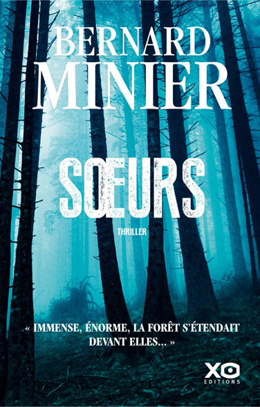
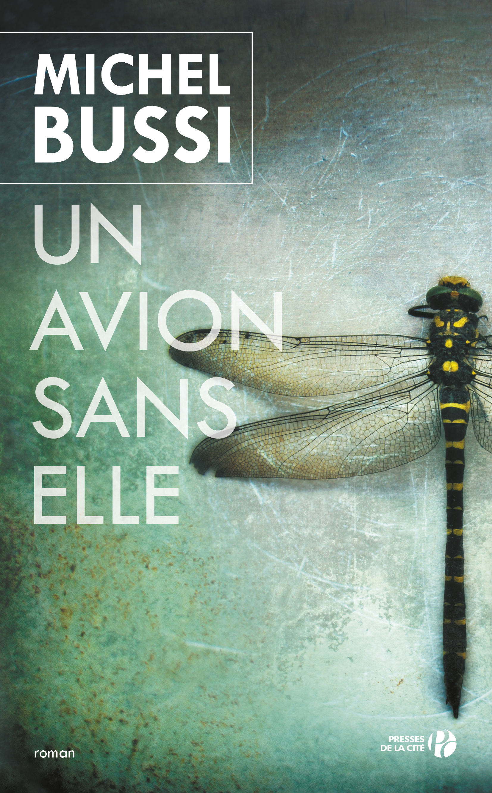
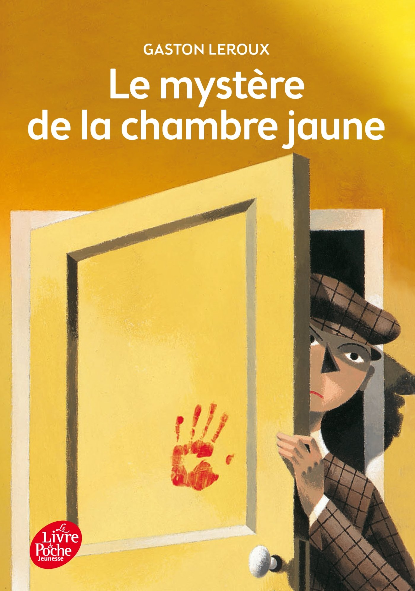

| Classement | Titre | Auteur | Parution | Résumé | Couverture |
|---|---|---|---|---|---|
| 1 | Soeurs | Bernard Minier | 2018 | Dans la première partie dont l'action se situe en 1993, le jeune Martin Servaz vient d'être affecté au SRPJ de Toulouse. Deux sœurs sont alors découvertes mortes, vêtues d'une robe de communiantes. Elles ont été frappées violemment au point où l'une d'elle est défigurée. Martin participe à l’enquête menée par le chef de la brigade Léo Kawalski. Un auteur à succès de romans policiers, Érik Lang, est soupçonné car dans un de ses romans nommé La Communiante, l'histoire présente des analogies avec la mise en scène accompagnant le meurtre des deux sœurs. Martin découvre des méthodes d'interrogation musclées et des manières peu conventionnelles utilisées au cours de l'enquête pour faire parler les témoins et suspects. Dans la seconde partie, en 2018, Érik Lang trouve, en rentrant chez lui, sa femme morte, vêtue d'une robe de communiante. C'est maintenant Martin Servaz qui dirige l’enquête. Il repense alors aux deux sœurs mortes 25 ans plus tôt. Quel lien peut-il y avoir entre ces deux crimes ? |
 |
| 2 | Double piège | Harlan Coben | 2016 | Vous pensez connaître la vérité. La vérité est que vous ignorez tout. New Jersey, aujourd'hui. Pour surveiller sa baby-sitter, Maya a installé une caméra dans son salon. Un jour, un homme apparaît à l'écran, jouant avec sa petite Lily. Un homme que Maya connaît bien : Joe, son mari... qu'elle vient d'enterrer. Un choc. Et de troublantes découvertes : le certificat de décès de Joe a disparu et l'arme impliquée dans sa mort est aussi celle qui a coûté la vie à la sœur de Maya, Claire, trois ans plus tôt. Mort ou vivant, qui était vraiment Joe ? Doit-on croire tout ce que l'on voit ? Pour Maya, l'heure est venue de plonger dans un passé trouble ; un monde à la frontière entre vérité et illusions. Un monde dangereux, dont elle pourrait être la nouvelle victime. |
|
| 3 | Dix petits nègres | Agatha Christie | 1939 | En 1939, l'Europe est au bord de la guerre. Dix personnes qui ne se connaissent pas (huit invités et deux domestiques) se retrouvent sur « Soldier Island » (l'Île du Soldat), une île le long de la côte du Devon en Angleterre. Isolés du continent, leur hôte A. N. O'Nyme mystérieusement absent, ils se retrouvent tour à tour accusés de crime. Après que deux personnes ont trouvé la mort, les autres comprennent qu'un meurtrier est parmi eux. | |
| 4 | Un avion sans elle | Michel Bussi | 2012 | 23 décembre 1980. Un crash d'avion dans le Jura. Une petite libellule de 3 mois tombe du ciel, orpheline. Deux familles que tout oppose se la disputent. La justice tranche : elle sera Émilie Vitral. Aujourd'hui, elle a 18 ans, la vie devant elle mais des questions plein la tête. Qui est-elle vraiment ? Dix-huit ans que Crédule Grand-Duc, détective privé, se pose la même question. Alors qu'il s'apprête à abandonner, la vérité surgit devant ses yeux, qu'il referme aussitôt, assassiné. Il ne reste plus à Émilie qu'un vieux carnet de notes, des souvenirs, et Marc, son frère, pour découvrir la vérité... |
 |
| 5 | Le mystère de la chambre jaune | Gaston Leroux | 1907 | La porte de la chambre fermée à clef « de l'intérieur », les volets de l'unique fenêtre fermés, eux aussi, « de l'intérieur », pas de cheminée... Qui a tenté de tuer Mlle Stangerson et, surtout, par où l'assassin a-t-il pu quitter la chambre jaune ? C'est le jeune reporter Rouletabille, limier surdoué et raisonnant par « le bon bout de la raison, ce bon bout que l'on reconnait à ce que rien ne peut le faire craquer », qui va trouver la solution de cet affolant problème, au terme d'une enquête fertile en aventures et en rebondissements. |
 |